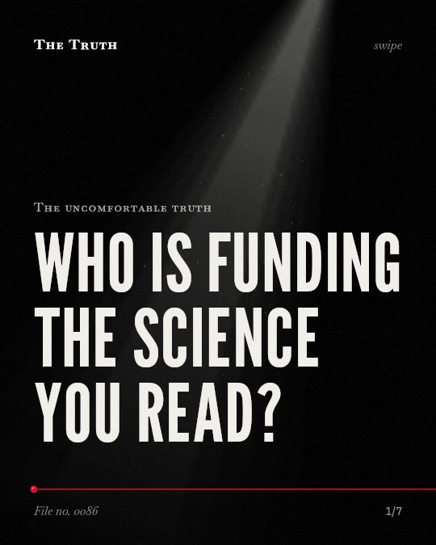

The uncomfortable truth
Who is funding the science you read?

The tobacco industry deliberately alters knowable facts for profit.
Research shows they misrepresent empirical evidence to promote their own agenda. They create front organizations to obscure their involvement in science.
Established. Several studies combined, or official data. The evidence backs this.
What the research found
The Foundation for a Smoke-Free World produces tobacco industry-friendly research and obscures industry involvement in science.
“producing tobacco industry-friendly research and opinion; obscuring industry involvement in science; funding third parties which denigrate science and scientists that may threaten industry profitability; and promoting tobacco industry credibility.”
Experiment, 2024. Legg et al., Tobacco control.
The tobacco industry uses sophisticated pricing strategies to undermine tax policies and increase profits.
“the TI widely uses a multitude of sophisticated pricing strategies across different settings around the world with the intention of undermining tax policies, thereby increasing tobacco consumption and maximising their profits.”
Systematic review, 2021. Sheikh et al., Tobacco Control.
Tobacco industry data on the illicit tobacco trade are not reliable due to a lack of transparency in data collection and presentation.
“Lack of transparency from data collection right through to presentation of findings was a key issue with insufficient information to allow replication of the findings frequently cited.”
Systematic review, 2018. Gallagher et al., Tobacco Control. This shows a link, not a cause.
The tobacco industry has deliberately altered and misrepresented knowable facts and empirical evidence to promote an agenda for monetary benefit.
“Numerous groups, such as the tobacco industry, have deliberately altered and misrepresented knowable facts and empirical evidence to promote an agenda, often for monetary benefit”
Experiment, 2021. Goldberg & Vandenberg, Environmental Health.
The tobacco industry uses direct and indirect lobbying, voluntary codes, and alliances with other industrial sectors to influence marketing regulations.
“The industry primarily conveys these arguments through direct and indirect lobbying, the promotion of voluntary codes and alternative policies, and the formation of alliances with other industrial sectors.”
Systematic review, 2014. Savell et al., PLoS ONE.
The tobacco industry has historically tried to keep tobacco taxes low using consistent tactics and misleading arguments.
“The tobacco industry has historically tried to keep tobacco taxes low using consistent tactics and misleading arguments.”
Systematic review, 2012. Smith et al., Tobacco Control.
Manufacturing doubt through systematic tactics.
The industry uses misleading arguments, lobbying, and alliances with other sectors to influence marketing regulations. They use pricing strategies to undermine tax policies.
Why you see what they want you to see.
That may be why public health policies feel like a constant debate. Information you trust may be shaped by those who profit from the status quo.
This part is our reading of the evidence, not a finding.
A news scroll on your phone.
You read a report on public health and see a debate about new regulations. You see different sides arguing over the same data point.
The honest summary
The sources provide consistent evidence that the tobacco industry employs diverse, systematic strategies to manufacture doubt and influence regulations for profit.
While the tactics are well-documented, the sources do not provide a comprehensive list of every specific scientific fact that has been misrepresented.
Who owns the information you trust?
Sources
- Zaineb Danish Sheikh, J Robert Branston, Anna Gilmore (2021). Tobacco industry pricing strategies in response to excise tax policies: a systematic review. Tobacco Control. Systematic review, cited 68 times.
- Emily Savell, Anna Gilmore, Gary Fooks (2014). How Does the Tobacco Industry Attempt to Influence Marketing Regulations? A Systematic Review. PLoS ONE. Systematic review, cited 254 times.
- Katherine Elizabeth Smith, Emily Savell, Anna Gilmore (2012). What is known about tobacco industry efforts to influence tobacco tax? A systematic review of empirical studies. Tobacco Control. Systematic review, cited 185 times.
- Allen William Andrew Gallagher, Karen Evans-Reeves, Jenny L. Hatchard et al. (2018). Tobacco industry data on illicit tobacco trade: a systematic review of existing assessments. Tobacco Control. Systematic review, cited 83 times.
- Rebecca F. Goldberg, Laura N. Vandenberg (2021). The science of spin: targeted strategies to manufacture doubt with detrimental effects on environmental and public health. Environmental Health. Experiment, cited 66 times.
- Legg T, Clift B, Gilmore AB (2024). Document analysis of the Foundation for a Smoke-Free World's scientific outputs and activities: a case study in contemporary tobacco industry agnogenesis. Tobacco control. Experiment, cited 18 times.
This file was researched and drafted by software, then checked by rules a model cannot talk its way around: each quote above was matched word for word against the paper, and every number had to appear in it. How files are made.